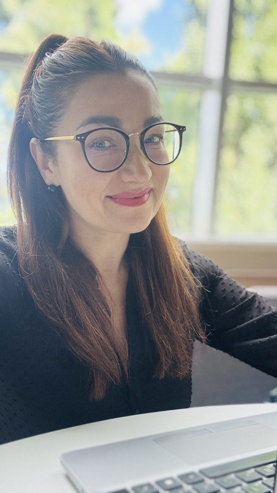
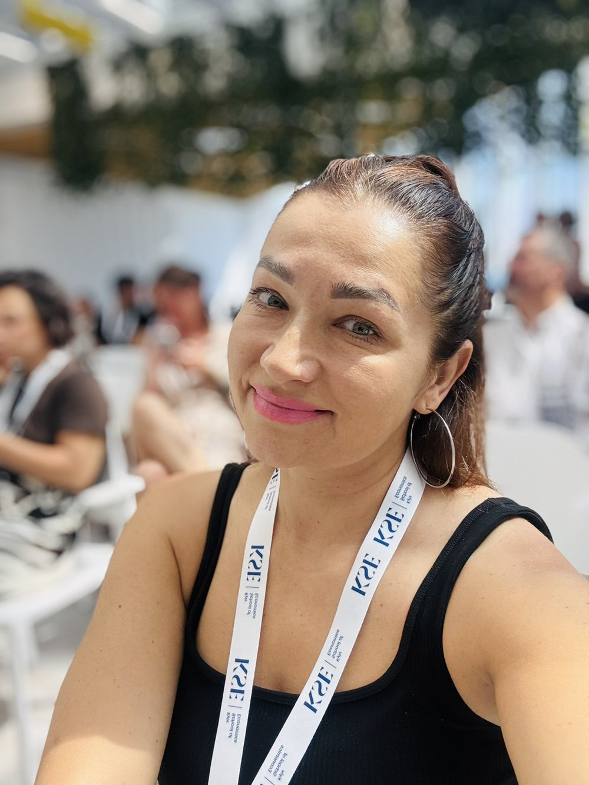
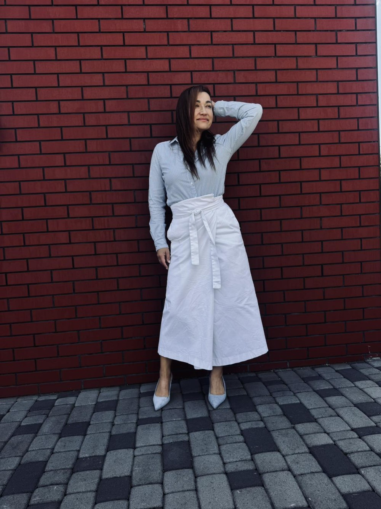
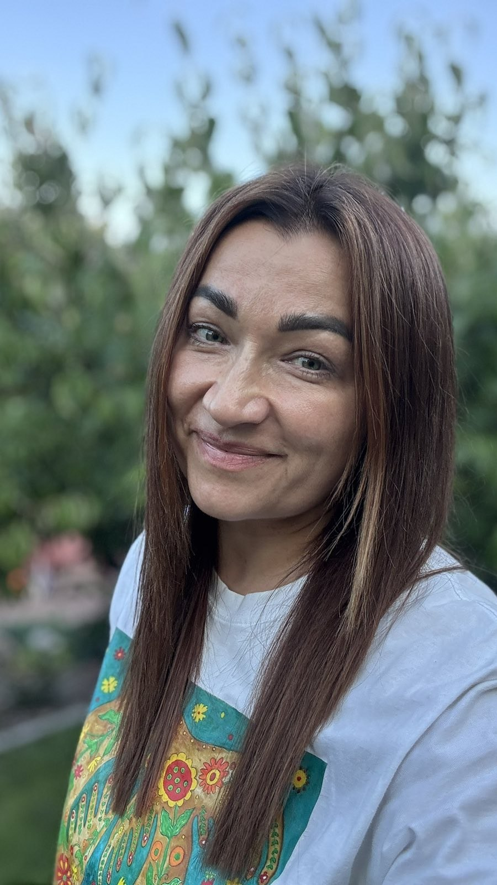

Отримай конкретний план, як стати помітною, впевненою і затребуваною на ринку праці — замість чергової поради «просто повір у себе».
Для жінок 35+, які відчувають, що на роботі, на співбесіді чи після перерви в кар'єрі їх перестали помічати.
30 хвилин · онлайн · без зобов'язань

Мене перестали помічати на роботі, хоча я роблю все так само добре
Боюсь співбесіди — не знаю, як пояснити перерву в кар'єрі, щоб не звучало як виправдання
Дивлюсь на вакансії і думаю: а візьмуть мене взагалі, чи відсіють через вік
Молодші колеги впевненіші, хоча в мене набагато більше досвіду
Страшно, що ШІ-скринінг відсіє резюме ще до того, як хтось живий мене побачить
Мені тисячу разів казали «будь впевненою». Ніхто не сказав, ЩО конкретно робити
Не курс і не тест з інтернету. Особиста робота зі мною: спочатку діагностуємо, де саме спрацьовує вікове упередження, потім будуємо план, який перекодовує це в перевагу.
Персональна робота зі мною особисто — від діагностики упередження до першого підвищення, офера чи впевненого повернення в кар'єру.
Не «ти навчишся» — а конкретно, що зміниться в твоєму житті за 3–6 місяців.
Матимеш чіткий план і впевненість, з чого почати — замість хаотичних спроб «оновити резюме самій»
Отримаєш підвищення, нову роль чи впевнене повернення в кар'єру після перерви
Перестанеш вибачатись за вік і кар'єрну перерву — і навчишся показувати їх як актив

Мені 45, і я сама проходила через відчуття «а чи не пізно мені щось міняти». Тому я працюю з цією темою не з теорії, а зсередини.
За консультаціями я чую одні й ті самі фрази знову і знову:
Я також СЕО Womafreesm — міжнародної коаліції, що досліджує, як ринок і ШІ-системи системно занижують видимість жінок 45–64 років. Це дає мені доступ до доказової бази, якою не володіє більшість кар'єрних коучів.
Я не стала коучем, прочитавши книжку. Я побудувала організацію, що вимірює саме цю проблему — і ці дані лежать в основі методу, яким я працюю з кожною клієнткою.


Реальні консультації, реальні жінки — імена змінені за їхньою згодою.
Спробувала багато різних ролей — школа, репетиторство, бізнес-клуб, музей — а свого місця так і не знайшла. Довгі роки соромилась визнати, що насправді хоче керувати, а не просто виконувати.
За одну стратегічну сесію розклали два шляхи: поступовий вхід у нову сферу через стажування чи молодшу роль, і паралельний розвиток власного проєкту. Вийшла з чіткістю, куди рухатись.
Іноді найбільше заважає не брак досвіду, а власна звичка применшувати те, що вже вмієш.
Прийшла на консультацію з відчуттям невизначеності — не розуміла, у який бік рухатись.
Через SWOT-аналіз особистості та техніку ікігай розібрали сильні сторони, що виснажує і який напрямок дійсно підходить. З'явилось чітке розуміння себе і свого шляху.
Іноді достатньо однієї консультації, щоб подивитись на себе зовсім по-іншому.
Одна сесія — 60–90 хвилин на тиждень. Перший помітний результат (чіткий план, перекодований наратив) — вже після перших 2–3 сесій. Підвищення, нова роль чи повернення в кар'єру — реалістично за 3–6 місяців регулярної роботи.
Так. Перший блок роботи — саме SWOT + Ікігай сесія, яка допомагає це побачити. Не потрібно приходити з готовою відповіддю.
Є групове менторство за €100/міс — та сама методика в колі інших жінок, менший чек за рахунок групового формату. Почати можна й з безкоштовної консультації, щоб зрозуміти, який формат підходить.
Так, працюю онлайн з україномовними жінками в будь-якій країні — Польща, Німеччина, Іспанія та інші.
Звичайний коучинг працює з мотивацією й самооцінкою окремо від контексту ринку. Я спочатку показую механізм — як саме вік і пауза читаються рекрутером чи ШІ-скринінгом — і лише тоді будую план, який враховує цю реальність, а не ігнорує її.
30 хвилин: розбираємо твою ситуацію, пробуємо перший блок SWOT + Ікігай, і ти йдеш з чесною оцінкою — навіть якщо не продовжимо співпрацю далі.
Залиш заявку на безкоштовний 30-хвилинний дзвінок. Без зобов'язань — розберемось, де саме система применшує твою цінність, і що з цим робити.
Записатись на безкоштовний дзвінок